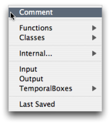
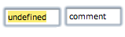
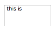
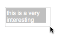
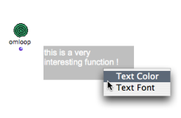
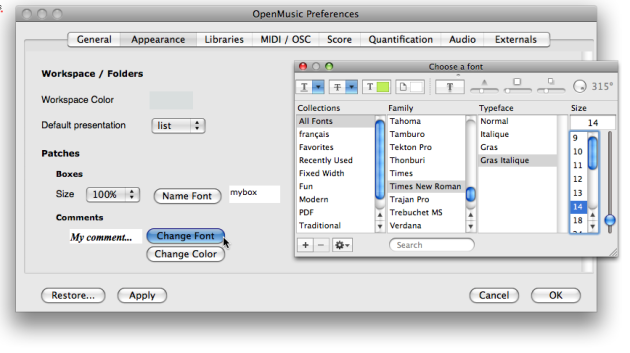
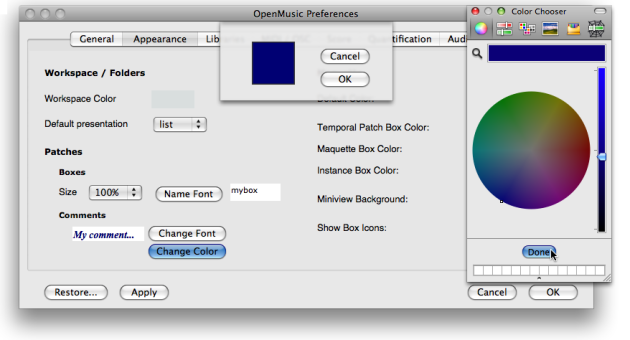
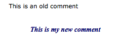

OpenMusic DocumentationHiérarchie de section : OM 6.6 User Manual > Visual Programming I > Comments
OpenMusic DocumentationHiérarchie de section : OM 6.6 User Manual > Visual Programming I > Comments
Navigation : page précédente | page suivante
Attention, votre navigateur ne supporte pas le javascript ou celui-ci à été désactivé. Certaines fonctionnalités de ce guide sont restreintes.
Comments
A comment is a text box that doesn't affect the patch in which it is set. It allows to add textual indications that can make a program more legible.
Creating a comment
With the contextual menu

|
To add a comment in a patch :
|
Directly in the patch editor
To add a comment box directly in a patch editor :
|

|
Editing a comment

|
|
Note
Unlike data boxes, comment boxes accept breaks and line returns.
Modifications
Manipulating Comment Boxes

|
Like any other box, a comment box can be moved, resized, copied, deleted. To apply a modification, choose a menu item in the |
Manipulating Boxes :
Fitting
To fit a comment box to the text, select it and press i .
Comments Font Style
Local Modifications
To modify the font type and colour of a comment within a patch :
|

|
Style Shortcuts
use the menu Edit / Font / Bold and Edit / Fonts / Italics or the corresponding keyboard shortcuts CMD + SHIFT + B / I in order to change all selected comments to bold or italics.
Default Style
The comments font style can be globally specified via the OM preferences. Select the OM 6.X.X. / Preferences menu. Click on the Appearance tab and go to the Comments section
To modify the comments font style :
click on
Change Fontand define a font style in the font dialogue windowchoose
Applyand/orOKchoose
Restoreto get back to the OM default values.

{kind=link}
To modify the comments colour
click on
Change Colourclick on the coloured patch, and choose a colour in the colour chooser.
choose
Applyand/orOKchoose
Restoreto get back to the OM default values.

{kind=link}
Applying Changes

|
New preferences will apply to new comments only. |
Références :
Plan :
Navigation : page précédente | page suivante
A propos...(c) Ircam - Centre Pompidou